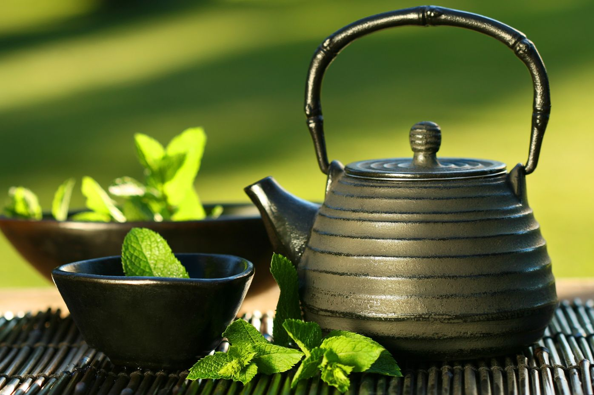

Tea Club

Про виникнення...
Що варто знати!
Кожен знає, що культура чайної церемонії в Японії (з яп. “тядо”) абсолютно інша, ніж в будь-якій іншій країні. Цю науку вивчають в школах багато років, аби мати змогу проводити чайні церемонії. До чаювання готуються довго і скрупульозно: необхідно правильно вибрати посуд, кімоно і те, чим пригощатимуть гостей. Така культура чайної церемонії з’явилась під час кривавих війн, які вели між собою держави. В такий спосіб полководці, попиваючи чай в спокійній невимушеній обстановці, відволікались від всього поганого і духовно відновлювались. Спочатку це був привілей вищих верств населення, але з часом мистецтво чайної церемонії розповсюдилось на всіх.

Приготування Чаю
1. Особливості і правила
Існує безліч різновидів чайної церемонії, з яких виділяється шість традиційних : нічна, на сході сонця, уранішня, пообідня, вечірня, спеціальна.
2.Сама церемонія
Перший крок – знайомство з чаєм. Його засипають у спеціальну коробочку і передають по черзі всім учасникам церемонії. Вдихаєш аромат, розпізнаєш ноти.
Галерея
Про нас

Наша компанія пропонує вам доєднатися до відкритого чайного клубу.Клуб був відкритий у 2002 році. Це перший заклад такого типу в Україні. У його колекції налічується понад 300 найменувань чаю різних смаків і міцності. Весь асортимент проходить контроль якості. Співробітники клубу регулярно їздять до Китаю в чайні експедиції. Напій заварюють тільки з використанням джерельної води. Подають його в ексклюзивному посуді. Чаювання проходить під фонову східну музику.